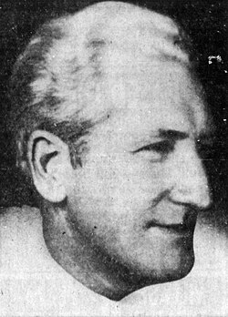

Frank Scully
Variety columnist and author, 1892 to 1964

A columnist for the show business paper Variety who wrote the 1950 bestseller Behind the Flying Saucers, which introduced the Aztec, New Mexico, crash story. 1,2
His sources turned out to be con men, and the book damaged his reputation, though he stood by it. 1,2
Open in the interactive Watcher
Related
- Aztec UFO crash The Aztec crash story
- Behind the Flying Saucers Wrote Behind the Flying Saucers
- Aztec story exposed His sources exposed, 1952
- A saucer crashed at Aztec with 16 alien bodies Claim
Sources
- Frank Scully Wikipedia
- Aztec crashed saucer hoax Wikipedia